para la toma de decisiones.
Mentalidad Analítica: Pensar con Datos.
Interpretar Datos: Ciclo Estratégico del Análisis
Visualización de Datos Efectiva.
Taller.
Operativas
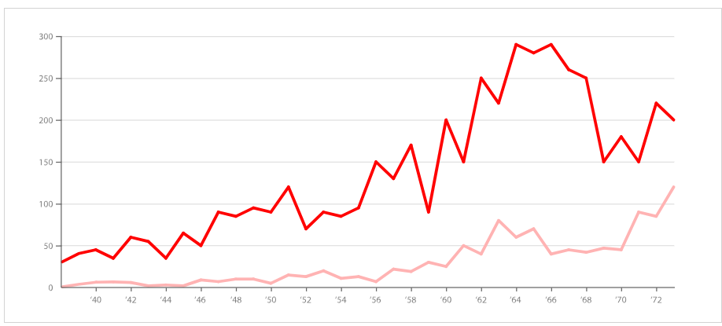
Tácticas
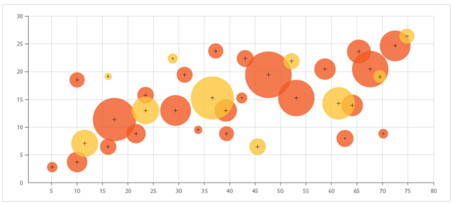
Estratégicas
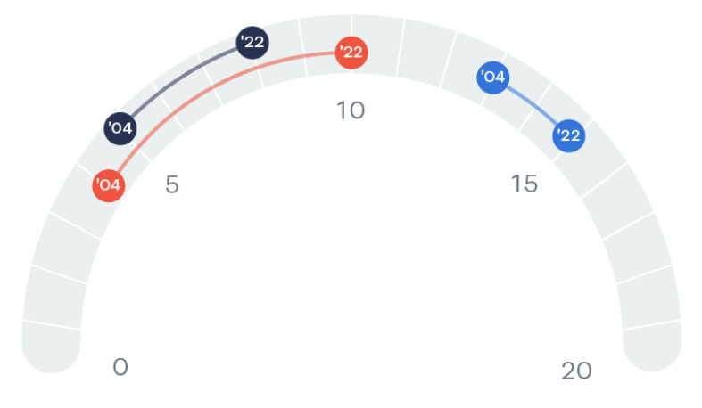
Operativas
Tácticas
Estratégicas
| Reportes | Análisis |
|---|---|
|
|
|
|
|
|
|
|
|
|
|
|
Buscar datos para defender decisiones ya tomadas.
Ignorar señales o alarmas.
Explicar resultados favorables.
Minimizar procesos que traen efectos negativos.
Datos
Narrativa
Visualización Efectiva
Datos
Narrativa
Visualización Efectiva
Datos
Narrativa
Visualización Efectiva
Las historias resuenan y se quedan con nosotros de una manera que los datos por si solos no podrían.
Los datos dicen que esta pasando, mientras que las histórias dicen el por qué y qué podemos hacer.
¿Por qué lo haremos?
¿Qué evidencia tenemos?
¿Cómo lo comunicamos?
¿Qué encontramos? ¿Qué hacemos?
Definición
Desplazamiento gradual de los datos o serie hacia valores altos o bajos en el tiempo.
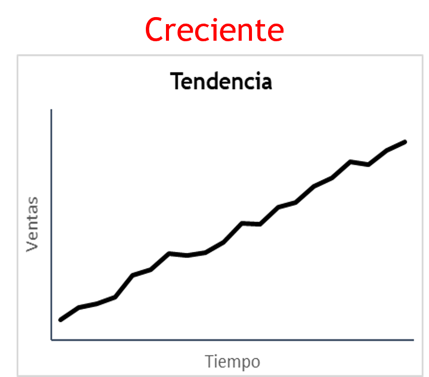
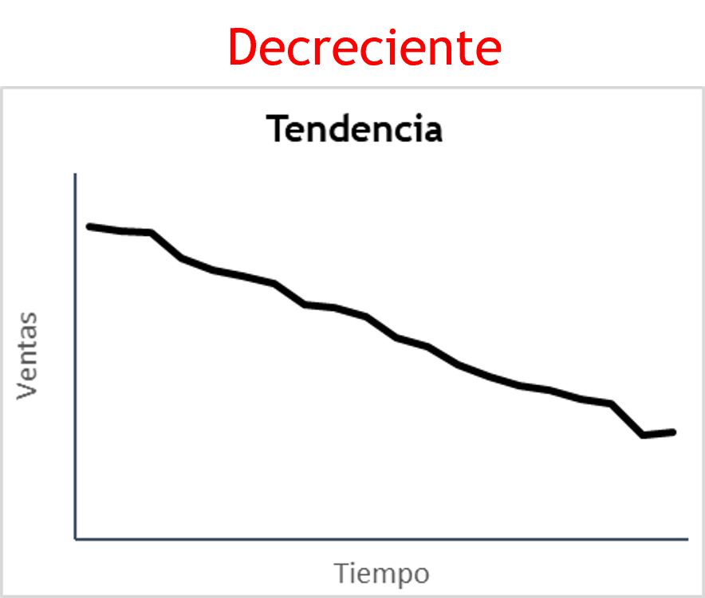
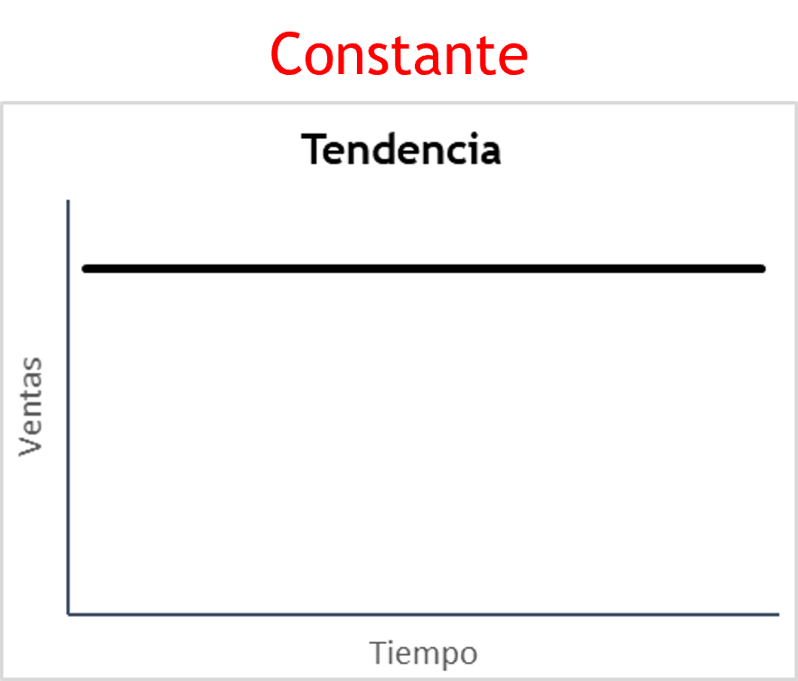
Tasas de crecimiento: MoM, YoY, MTD, YTD.
Estacionalidad.
Estadística descriptiva.
El problema no está en el promedio.
Los datos globales ocultan información crítica.
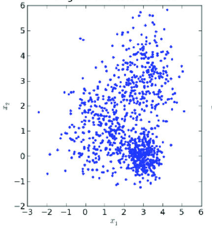
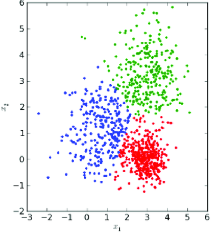
Todo análisis debe de responder las siguientes preguntas:
¿Qué está pasando?
¿Por qué está pasando?
¿A quién afecta?
¿Qué pasaría si no hacemos nada? / ¿Qué hacemos?
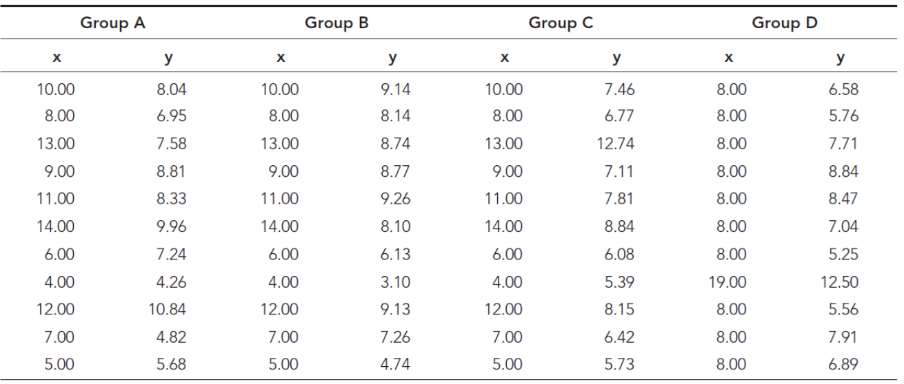
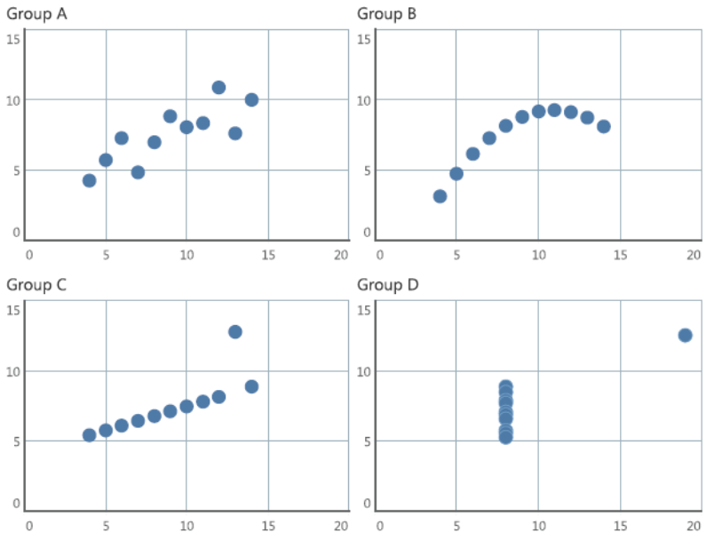
Percibimos objetos cercanos como pertenencientes a un mismo grupo.
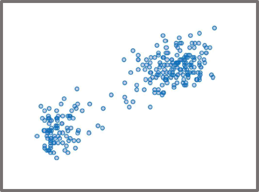
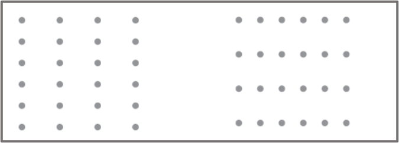
Objetos con similar color, forma, tamaño u orientación son percibidos como pertenecientes a un mismo grupo.
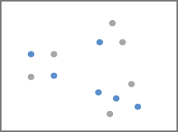
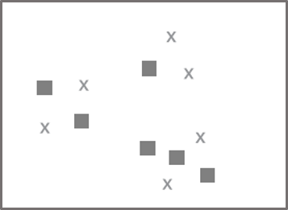
Objetos que son limitados o encerrados por alguna figura o sombra son percibidos como pertenecientes a un mismo grupo.
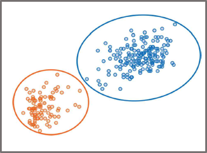
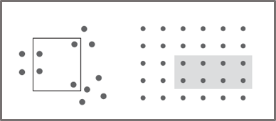
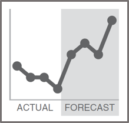
A las personas les gusta las cosas simples y lo ajustan a conceptos que ya existen o asimilan con facilidad.
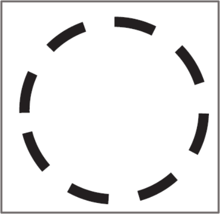
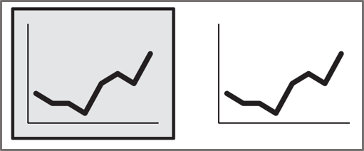
Objetos alineados o contínuos, que guardan un mismo eje, se perciben que pertenecen a un mismo grupo o que tienen igual característica.
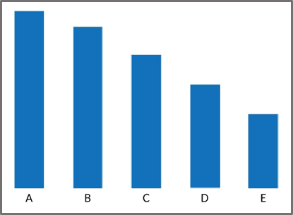
Objetos conectados se perciben como pertenecientes a un mismo grupo.
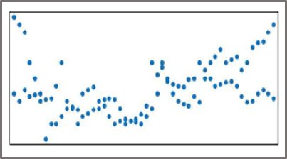
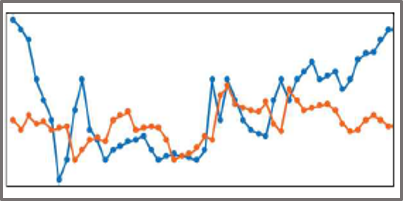
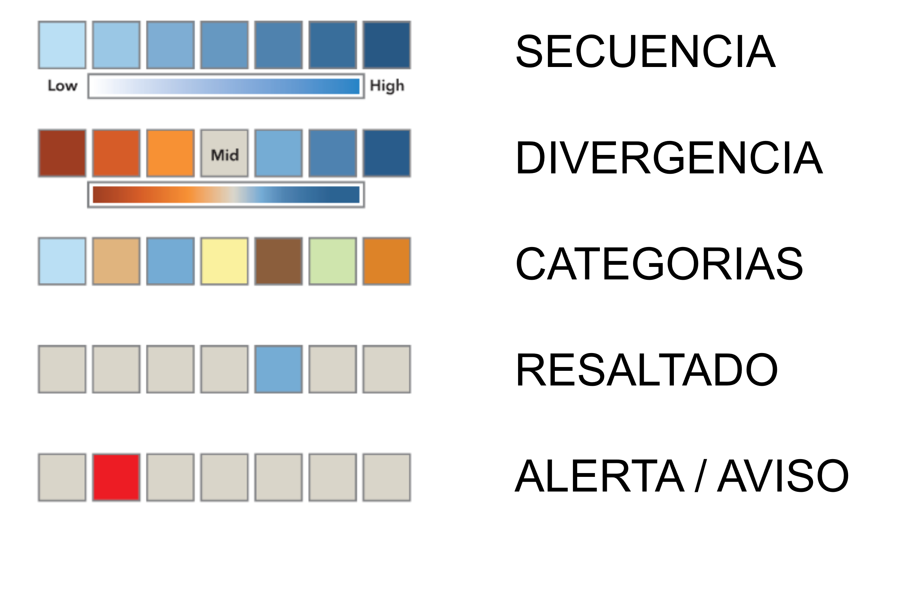
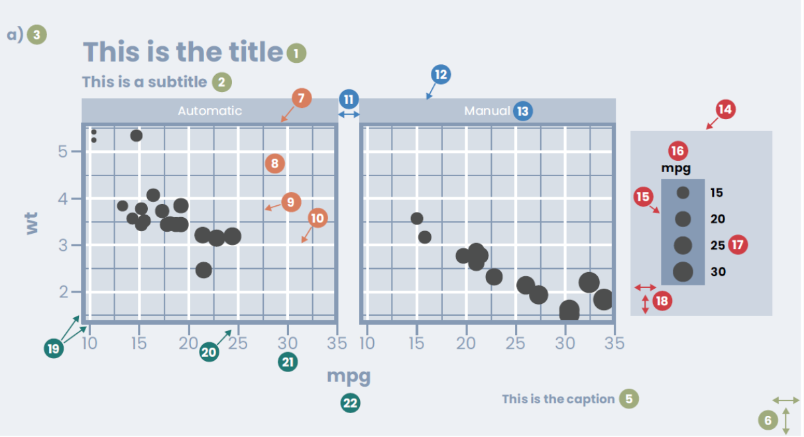
Título de gráfico
Subtitulo de gráfico
Etiqueta de gráfico
Fondo de gráfico
Pie de nota del gráfico
Márgenes del gráfico
Borde de panel gráfico
Fondo de panel gráfico
Cuadricula menor
Cuadrícula mayor
Espacio de panel
Banda de panel
Título de panel
Fondo de leyenda
Marca/Key de leyenda
Título de leyenda
Texto de leyenda
Margen de leyenda
Líneas de eje
Marcas de eje
Texto de eje
Título de eje
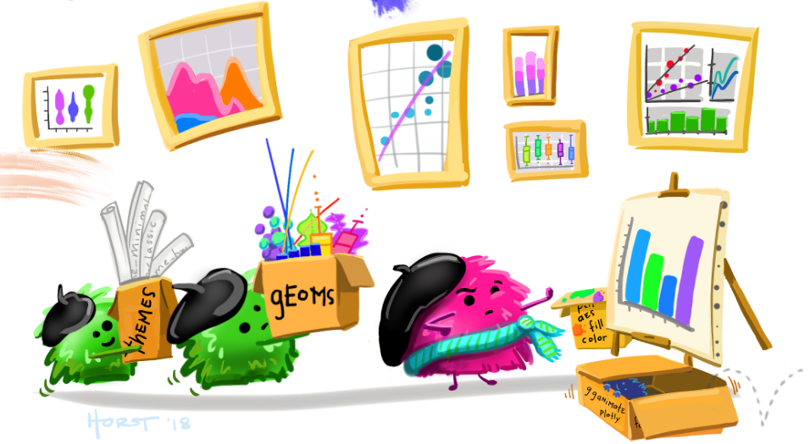
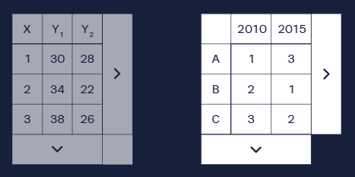
Por la función que desempeña.
Comparación
Distribución
Parte de un todo
Correlación
Tendencia con el tiempo